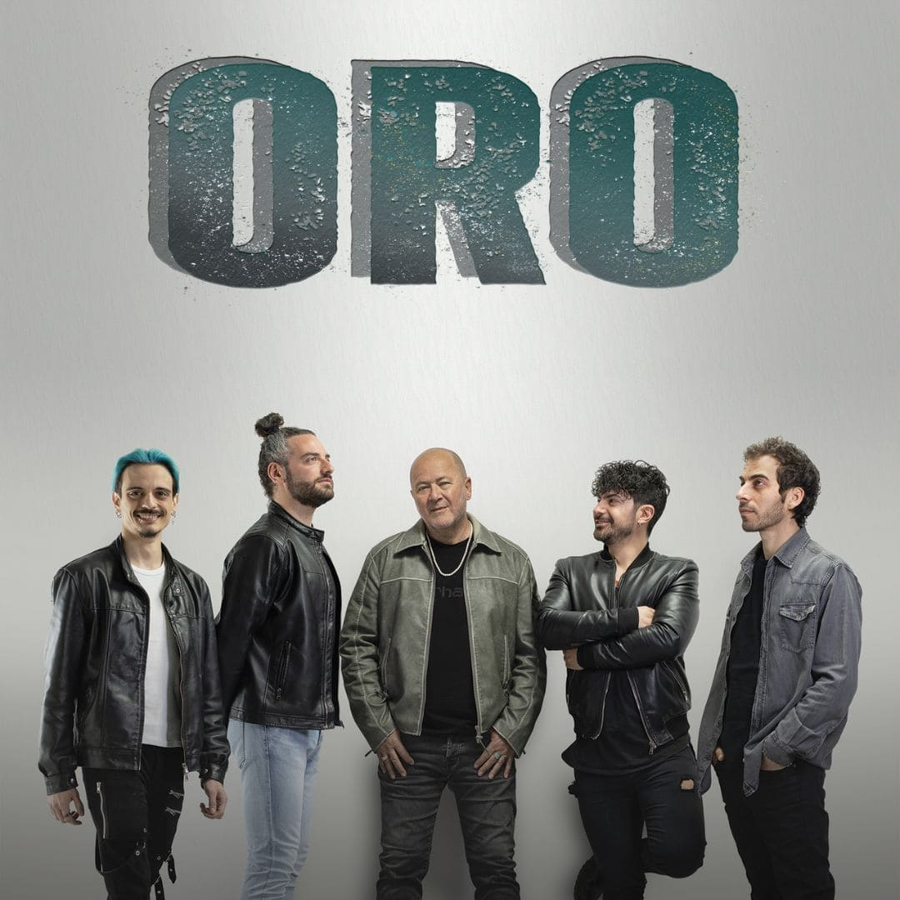

La Música Italiana: Un Viaje Emocional
De todas las músicas del mundo, algunas nos conmueven, emocionan o molestan más que otras. La canción de lengua italiana ha logrado hacerse un lugar destacado, gracias a su diversidad y a sus grandes éxitos.
Una encuesta reciente revela que el 79% de los argentinos están interesados en la música y los festivales, reflejando el poder universal de la música. La música italiana, por su parte, es una representación de emociones profundas y sentimientos, con canciones que han dado la vuelta al mundo.
Top 10: Canciones Italianas Inolvidables
-
Ti Amo - Umberto Tozzi
Un himno mundial de amor desde 1977, con una versión de Sergio Dalma en español.
-
Con te partirò - Andrea Bocelli
Un monumento musical de los 90, traducido a varios idiomas, y que Donna Summer le dio un toque pop-dance.
-
Sara perche ti amo - Ricchi e Poveri
Un éxito de 1981 del Festival de San Remo, con versiones en varios idiomas, incluida una de Thalía.
-
L’italiano - Toto Cutugno
Una oda a Italia y su música, un éxito mundial desde el Festival de San Remo de 1983.
-
La solitudine - Laura Pausini
Un éxito de los 90 sobre la separación adolescente, adaptado al español como "La Soledad".
-
Bella Ciao
Un símbolo musical de la resistencia italiana, popularizado por "La Casa de Papel".
-
Vivo per lei - O.R.O
Un monumento a la canción italiana, con versiones de Hélène Ségara, Andrea Bocelli y otros.
 -
Volare (Nel Blu Dipinto Di Blu) - Domenico Modugno
Un éxito de Eurovisión de 1958, ganador de premios Grammy y un estándar italiano.
-
Cosa della vita - Eros Ramazzotti y Tina Turner
Un dueto de 1997 entre dos gigantes de la música mundial.
-
O sole mio - Luciano Pavarotti
Una canción napolitana universal, interpretada por Pavarotti y muchos otros artistas.